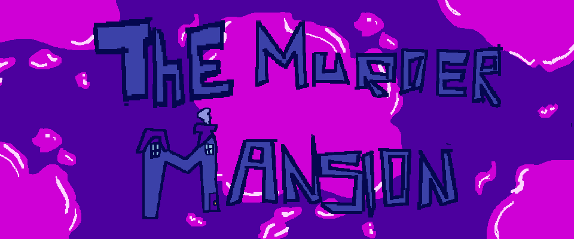
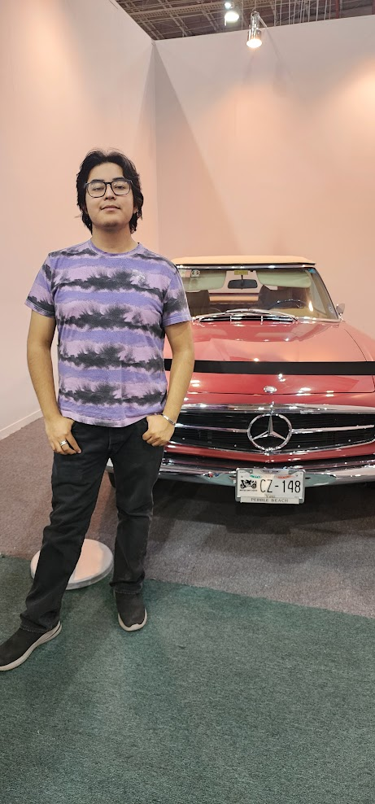

THE MURDER MANSION
The Murder Mansion es un juego en el que encarnas a un detective que tiene que resolver un asesinato, el juego tiene la escencia del juego de mesa CLUE
Me llamo Dante Misael Osornio G. y soy un estudiante de la carrera de Ingeniería en Desarrollo de Software Interactivo y Videojuegos en la Universidad Amerike. Me gusta la programación, los videojuegos y el Dungeons and Dragons.
Como programador de videojuegos he participado en varias GameJam como Global GameJam y Monarca GameJam y actualmente soy Lead Programmer en TEAM BRIJE
Llevo programando desde la secundaria en donde aprendi Pyton, en la prepararoria aprendi C y R, finalmente en la Universidad me he dedicado a C# pero tambien tengo conocimiento en HTML, CSS y JavaScript.
Me llamo Dante Misael Osornio G. y soy un estudiante de la carrera de Ingeniería en Desarrollo de Software Interactivo y Videojuegos en la Universidad Amerike. Me gusta la programación, los videojuegos y el Dungeons and Dragons.
The Murder Mansion es un juego en el que encarnas a un detective que tiene que resolver un asesinato, el juego tiene la escencia del juego de mesa CLUE
Cubical Defense es un juego de oleadas cooperativo en el que con unas torretas defiendes tu nexo de los malvados cubos.
Tecnotropia es un juego de puzles donde ruedas tu camino a la libertad.
Super Ramon ADventures es un juego de plataformas 2D, donde controlas a Ramon un pato que lucha contra el mal con sus ASOMBROSOS poderes.
YY es un shoot em´ up / arcade donde el objetivo pricipal es sobrevivir ante las interminables oleadas de alienigenas.
Correo: gumosornio@hotmail.com